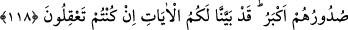

tasadduk edip kabul ettirdiğinden başka malın mı var ki?”[100]
Hz. Peygamber (s.a.) şöyle buyurur: “Âişe, cennette benimle birlikte olmayı
istiyorsan, dünyalık olarak bir yolcunun azığı kadarı sana kâfidir. Zenginlerle oturup
kalkmaktan uzak dur. Elbiselerini yamalamadıkça eskimiş sayma.”[101]
Yine Hz. Peygamber (s.a.) buyuruyor: “Allah’ım, beni sevenlere iffet ve kanâat nasip
eyle. Bana buğzedenlere de çok mal ve evlat vererek meşgul et!”[102] Ey kul, durumun
hakikatine ve malın, kişiden hiçbir azabı gidermeyeceğine muttali oldun. Artık sana
düşen, kanâat etmek, dünyalıkları azaltmak, mal ve mevki sahiplerine imrenmemektir.
Bizim hakkımızda zikir ve şevk için
İki âlemde gönül ve dil kâfidir.
Dünya ehlinin yemek ve giysisinden
Eski bir hırka ve yarım ekmek bize yeter.
118. Ey îman edenler! Kendi dışınızdakileri sırdaş edinmeyin. Çünkü onlar size
fenâlık etmekten asla geri durmazlar, hep sıkıntıya düşmenizi isterler. Gerçekten,
kin ve düşmanlıkları ağızlarından (dökülen sözlerinden) belli olmaktadır.
Kalplerinde sakladıkları (düşmanlıkları) ise daha büyüktür. Eğer düşünüp
anlıyorsanız, âyetlerimizi size açıklamış bulunuyoruz.
Bu âyet, münâfıklarla iyi ilişkiler içinde bulunan bazı mü’minler hakkında nâzil
olmuştur. Görüldüğü gibi Cenâb-ı Hak, şu sözüyle bunları yaptıklarından nehyetmiştir:
“Kendinizden”, yani müslümanlardan “başkalarını sırdaş edinmeyin.” “Bitâne”
aslında astar demektir. Burada kişinin sırdaşı ve kendisine güvenerek sırlarını açtığı
arkadaş anlamında kullanılmıştır. Sırdaş; dost, elbisenin, insanın tenine temas eden iç
kısmına benzetilmektedir. Nitekim Hz. Peygamber (s.a.) de: “Ensâr iç elbiselerimiz
kadar bize yakındır, öteki insanlar ise, dış elbiselerimizdir.”[103] buyurarak ensârı iç
elbiseye benzetmiştir.
“Onlar size fenâlık etmekten asla geri durmazlar.” cümlenin mânası şudur: Çeşitli
hile ve komplolarla sizi ifsâd etmekten geri durmazlar; size kötülük getirecek hiçbir
davranışta gayretlerini esirgemezler. “Size sıkıntı verecek şeyleri isterler.” Hem din,
hem de dünya işlerinizde çok büyük zararlara uğramanızı ve sıkıntı çekmenizi temennî